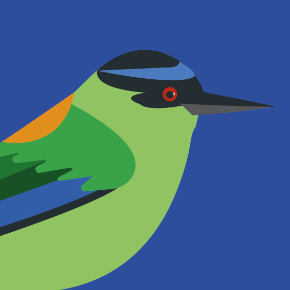

<!--
  Generated template for the PerfilPage page.

  See http://ionicframework.com/docs/components/#navigation for more info on
  Ionic pages and navigation.
-->
<ion-header>

  <ion-navbar>
    <ion-title>Perfil</ion-title>
  </ion-navbar>

</ion-header>


<ion-content padding>

  <div class="level">
    <p id="text-level">
        Nivel 
    </p>
    <p id="num-level">
        13
      </p>
  </div>
  <div class="avatar">
      
  </div>

  <div class="info-user">
    <h1>USERNAME</h1>
    <h3>NOMBRE COMPLETO</h3>
  </div>
  <div class="progressBar">
      <progress-bar [progress]="loadProgress"></progress-bar>
      <p>Siguiente Nivel</p>
  </div>
  <button ion-button id="ver-amigos">
    <p>
        Ver Amigos
    </p>
  </button>

  <div class="logo">
    
  </div>
</ion-content>
